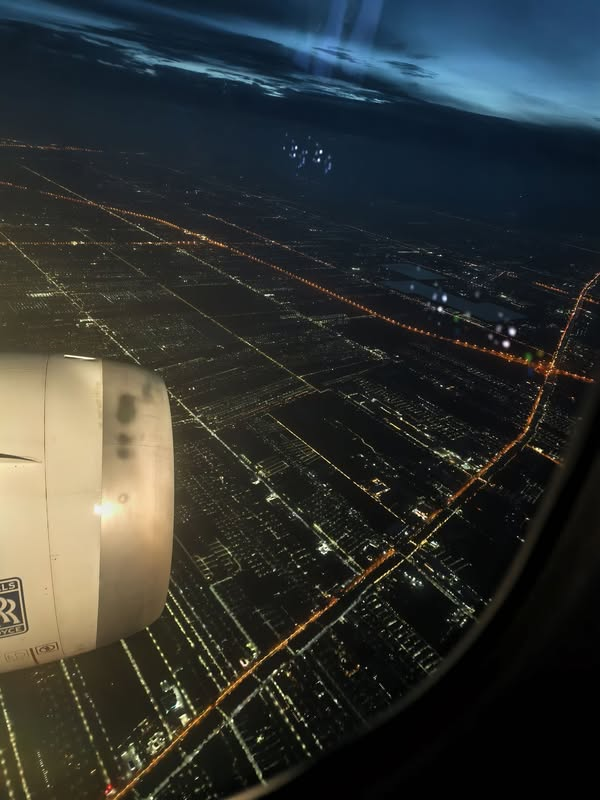

กลับบ้าน หลังการเดินทางเปลี่ยนเราไปแล้ว
{kind=link}

ไม่มีงานเลี้ยงใดไม่เลิกลา ถึงเวลากลับบ้าน ไปสอนหนังสือ บรรยาย คุยกับนิสิตปริญญาโท เริ่มโครงการวิจัย ประชุม ทำสวน กลับไปหานังนวล และใช้เวลากับครอบครัว
พูดง่าย ๆ เวลาที่เหลือคือเวลาเก็บกวาดสิ่งค้างคาให้หมดจด พร้อมกับเริ่มบทใหม่ของชีวิตโดยไม่รู้แน่ชัดว่าบทนั้นจะมีหน้าตาอย่างไร
จากไปโดยไม่ต้องร่ำลา และพร้อมสำหรับบทใหม่
ความคิดเรื่องการกลับบ้านพาให้นึกถึงฉากหนึ่งใน Good Will Hunting ซึ่งเพื่อนของพระเอกหวังว่าสักเช้าจะมารับแล้วพบว่าเขาออกไปใช้ชีวิตที่ควรเป็นเสียที โดยไม่ต้องมีพิธีอำลา
อีกด้านหนึ่งคือคำถามว่า เราพร้อมเพียงใดสำหรับบทใหม่ของชีวิต และเมื่อมองย้อนกลับไป เราได้ใช้เวลาที่มีทำเรื่องงดงามและมีชีวิตเพื่อใครบ้าง
สิบหกวันที่ไม่ต้องรีบ
เส้นทางจาก Thessaloniki, Meteora, Delphi, Athens, Venice, Ortisei, Varenna จนถึง Milan เต็มไปด้วยการเดินมากกว่าวันละหมื่นก้าว แต่ไม่มีวันไหนต้องรีบ อยากไปเมื่อไรก็ไป ไม่จำเป็นต้องเข้าทุกโบสถ์ และหากมีที่ให้นั่งพักก็นั่ง
การไม่ต้องไล่เก็บทุกสถานที่ทำให้การเดินทางมีพื้นที่สำหรับการมอง การคิด และการอยู่กับสิ่งที่พบตรงหน้า มากกว่าการทำภารกิจให้ครบตามแผน
AI เป็นผู้ช่วยวางแผน ไม่ใช่ผู้เลือกแทน
AI ช่วยทั้งการปรับแผนรายวัน เลือกสิ่งที่ไม่ควรพลาด เตือนเรื่องที่ต้องระวัง อ่านเมนูและป้ายต่างภาษา แนะนำร้านอาหาร ตรวจข้อกำหนดการจอดรถ และช่วยแก้บทความวิชาการระหว่างอยู่ Milan
มันช่วยลดค่าแท็กซี่ ชี้ทางเลือกที่ถูกกว่า และบางครั้งแนะนำให้ยอมจ่ายเพื่อความสบาย แต่เมื่อถามว่าจะซื้อไวน์กลับไปดื่มที่ห้องหรือควรพัก มันให้ข้อมูลแล้วไม่เลือกแทน นี่อาจเป็นบทบาทที่เหมาะสมที่สุดของ AI: ขยายทางเลือกและช่วยเห็นผลตามมา โดยยังปล่อยให้มนุษย์รับผิดชอบการตัดสินใจ
ข้อผิดพลาดยังเป็นส่วนหนึ่งของการเดินทาง
มีทั้งการอัปเกรดรถที่ไม่ได้ optimal การเติม eSIM โดยไม่จำเป็นเพราะเข้าใจว่าแพ็กเกจหมด และการขึ้นกระเช้าไป Seceda ในวันที่เห็นเพียงเมฆ ซึ่งมีต้นทุนสูงมาก
AI ช่วยลดความผิดพลาดได้บางส่วน แต่ไม่ทำให้โลกแน่นอนขึ้นทั้งหมด ธรรมชาติ ระบบสื่อสาร การตัดสินใจเฉพาะหน้า และความต้องการความสบายยังสร้าง trade-off ที่ไม่มีคำตอบสมบูรณ์
สิ่งที่ได้กลับมาไม่อยู่ในกระเป๋า
เมื่อย้อนอ่านบันทึกทั้งทริป สิ่งที่เห็นคือมุมมองที่เปลี่ยนไป ธรรมชาติ ศิลปะ ประวัติศาสตร์ และวัฒนธรรมช่วยเติมบางอย่างกลับคืนมา เช่นเดียวกับการได้พบอาจารย์และอยู่ท่ามกลางผู้คนที่ปรารถนาดี
การไม่มีหน้าที่ที่ได้รับมอบหมายคอยผูกรั้ง และไม่ต้องสร้างภาระจากความรับผิดชอบที่หาเรื่องทำเอง เปิดพื้นที่ให้สมองผ่อนคลาย สติปัญญาเฉียบคม และเข้าใจโลกมากขึ้นอย่างอธิบายได้ยาก
การตัดสินใจไม่มีคำตอบสมบูรณ์แบบ
ทริปนี้วางแผนตั้งแต่เดือนพฤศจิกายน หลังพลาดการเดินทางในช่วงโควิดและจากปัญหาวีซ่าในปีต่อมา ปีนี้จึงตั้งใจว่าจะมาให้ได้ โดยเฉพาะเมื่ออาจารย์ที่ปรึกษาอายุ 84 ปีแล้ว
การตัดสินใจหลายอย่างในชีวิตไม่มีคำตอบที่สมบูรณ์แบบ มีเพียงการพยายามเลือกสิ่งที่คิดว่าดีที่สุดในเวลานั้น
กลับไปเมืองไทยแล้วจะเป็นอย่างไรยังไม่รู้ แต่เมื่อการเดินทางหนึ่งจบลง คำถามที่ยังมีชีวิตชีวาอยู่ก็คือ — ทริปหน้าจะไปไหนดี
บทความที่เกี่ยวข้อง วันที่ดี หลังจากกระเป๋าหายและภารกิจอันยาวนาน อีกบันทึกว่าด้วยความไม่แน่นอน ผู้คน และสิ่งเล็ก ๆ ที่เปลี่ยนความหมายของหนึ่งวัน